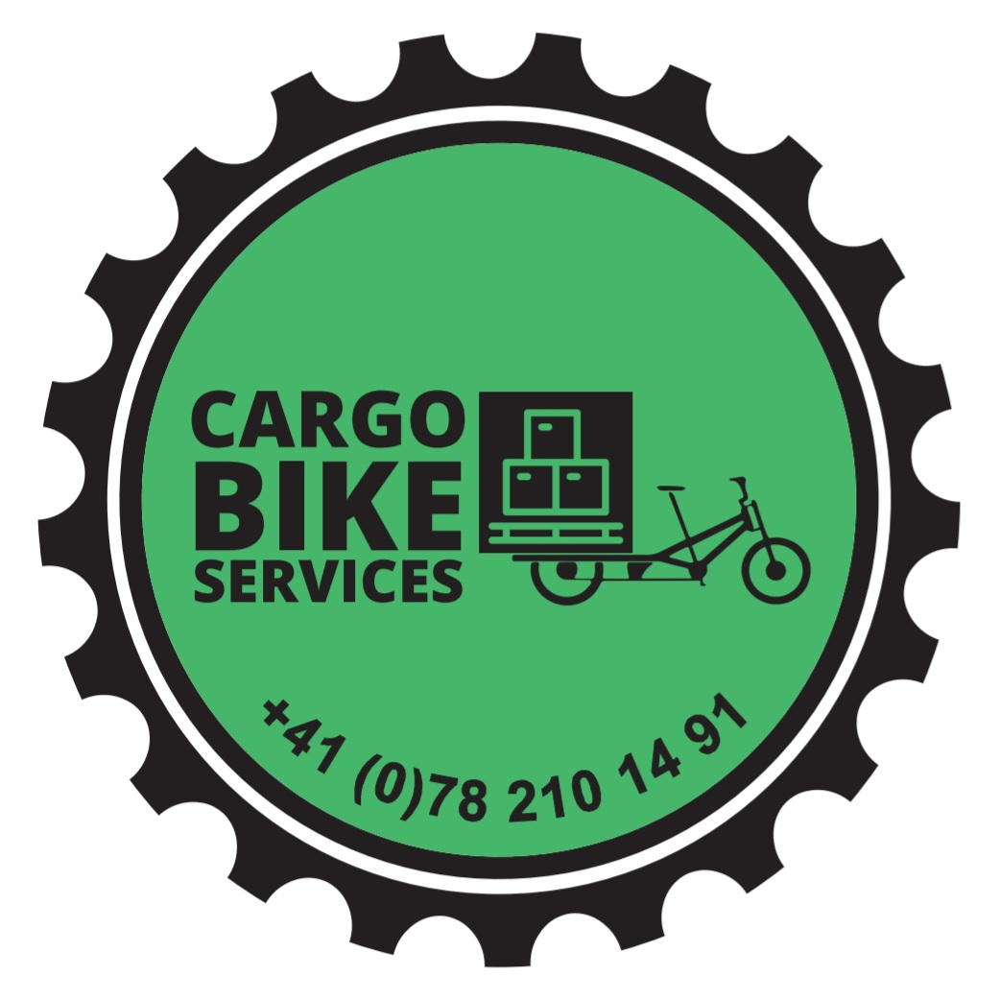

Livraisons éco-responsables en vélo cargo pour professionnels et particuliers
L'expertise du transport lourd au service de la mobilité douce.
Fort d'une solide expérience dans le secteur du transport routier et de la logistique, Cargobike Services a été fondé en 2022 pour répondre aux défis urbains de Genève. L'objectif : offrir la même rigueur, la même ponctualité et la même sécurité d'arrimage que le transport traditionnel, tout en éliminant les nuisances sonores et environnementales.
Pour toute demande de services, veuillez remplir notre formulaire en ligne.
Réponse rapide garantie.